14 Hotspot maps
Hotspot maps are used to find where events (officer-involved shootings, crimes, liquors stores) are especially prevalent. These maps are frequently used by police departments, particularly in determining where to do hotspot policing (which is focusing patrols on high-crime areas).
However, there are significant flaws with these kinds of maps. As we’ll see during this lesson, minor changes to how we make the maps can cause significant differences in interpretation. For example, determining the size of the clusters that make up the hotspots can make it seem like there are much larger or smaller areas with hotspots than there actually are. These clusters are also drawn fairly arbitrarily, without taking into account context such as neighborhoods (In Chapter 15 we’ll make maps that try to account for these types of areas). This makes it more difficult to interpret because even though maps give us the context of location, it can combine different areas in an arbitrary way. We’ll explore these issues in more detail throughout the lesson but keep in mind these risks as you make your own hotspot maps.
Here, we will make hotspot maps with our officer_shootings_geocoded crime data. First we need to load the data.
load("data/officer_shootings_geocoded.rda")14.1 A simple map
To make these maps we will use the package ggmap.
install.packages("ggmap")library(ggmap)
#> Loading required package: ggplot2
#> Google's Terms of Service: https://cloud.google.com/maps-platform/terms/.
#> Please cite ggmap if you use it! See citation("ggmap") for details.We’ll start by making the background to our map, showing Philadelphia. We do so using the get_map() function from ggmap which gets a map background from a number of sources. We’ll set the source to “stamen” since Google no longer allows us to get a map without creating an account. The first parameter in get_map() is simply coordinates for Philadelphia to ensure we get a map of the right spot.
philly_map <- ggmap(get_map(c(-75.288486, 39.868285, -74.950965, 40.138251),
source = "stamen"))
#> Source : http://tile.stamen.com/terrain/12/1191/1548.png
#> Source : http://tile.stamen.com/terrain/12/1192/1548.png
#> Source : http://tile.stamen.com/terrain/12/1193/1548.png
#> Source : http://tile.stamen.com/terrain/12/1194/1548.png
#> Source : http://tile.stamen.com/terrain/12/1195/1548.png
#> Source : http://tile.stamen.com/terrain/12/1191/1549.png
#> Source : http://tile.stamen.com/terrain/12/1192/1549.png
#> Source : http://tile.stamen.com/terrain/12/1193/1549.png
#> Source : http://tile.stamen.com/terrain/12/1194/1549.png
#> Source : http://tile.stamen.com/terrain/12/1195/1549.png
#> Source : http://tile.stamen.com/terrain/12/1191/1550.png
#> Source : http://tile.stamen.com/terrain/12/1192/1550.png
#> Source : http://tile.stamen.com/terrain/12/1193/1550.png
#> Source : http://tile.stamen.com/terrain/12/1194/1550.png
#> Source : http://tile.stamen.com/terrain/12/1195/1550.png
#> Source : http://tile.stamen.com/terrain/12/1191/1551.png
#> Source : http://tile.stamen.com/terrain/12/1192/1551.png
#> Source : http://tile.stamen.com/terrain/12/1193/1551.png
#> Source : http://tile.stamen.com/terrain/12/1194/1551.png
#> Source : http://tile.stamen.com/terrain/12/1195/1551.png
#> Source : http://tile.stamen.com/terrain/12/1191/1552.png
#> Source : http://tile.stamen.com/terrain/12/1192/1552.png
#> Source : http://tile.stamen.com/terrain/12/1193/1552.png
#> Source : http://tile.stamen.com/terrain/12/1194/1552.png
#> Source : http://tile.stamen.com/terrain/12/1195/1552.png
philly_map
Since we saved the map output into “philly_map” we can reuse this map background for all the maps we’re making in this lesson. This saves us time as we don’t have to wait to download the map every time. Let’s plot the shootings from our data set. Just as with a scatterplot we use the geom_point() function from the ggplot2 package and set our longitude and latitude variables on the x- and y-axis, respectively.
philly_map +
geom_point(aes(x = lon, y = lat),
data = officer_shootings_geocoded)
#> Warning: Removed 2 rows containing missing values (geom_point).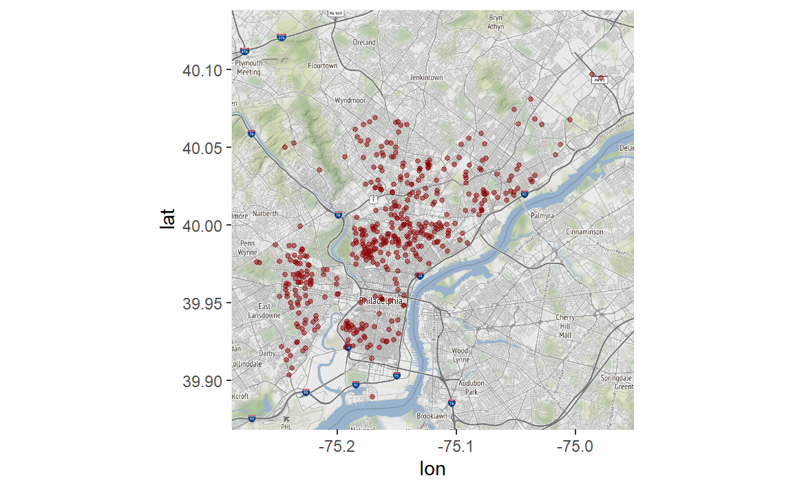
If we wanted to color the dots we can use “color =” and then select a color. Let’s try it with “forestgreen”.
philly_map +
geom_point(aes(x = lon, y = lat),
data = officer_shootings_geocoded,
color = "forestgreen")
#> Warning: Removed 2 rows containing missing values (geom_point).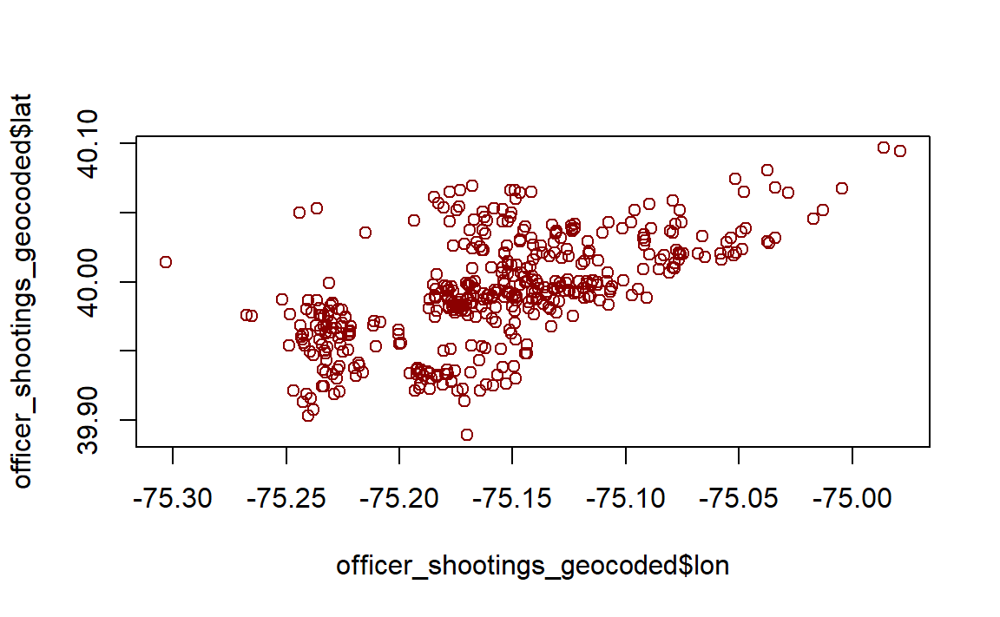
As with other graphs we can change the size of the dot using “size =”.
philly_map +
geom_point(aes(x = lon, y = lat),
data = officer_shootings_geocoded,
color = "forestgreen",
size = 0.5)
#> Warning: Removed 2 rows containing missing values (geom_point).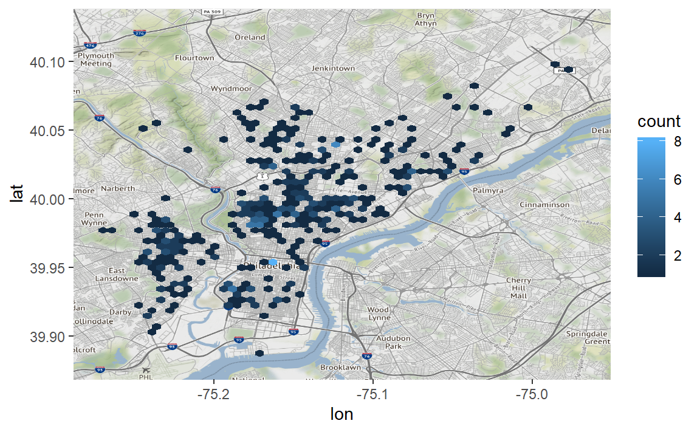
philly_map +
geom_point(aes(x = lon, y = lat),
data = officer_shootings_geocoded,
color = "forestgreen",
size = 2)
#> Warning: Removed 2 rows containing missing values (geom_point).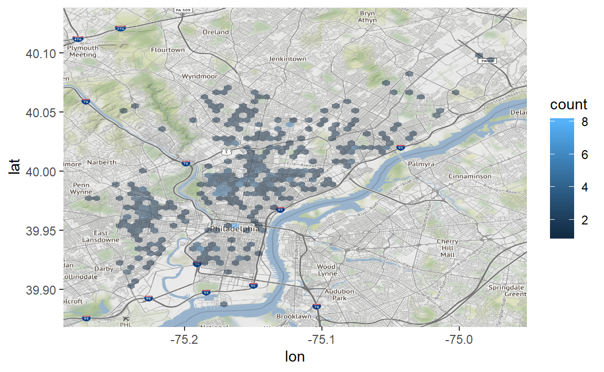
For maps like this - with one point per event - it is hard to tell if any events happen on the same, or nearly the same, location as each point is solid green. We want to make the dots semi-transparent so if multiple shootings happen at the same place that dot will be shaded darker than if only one shooting happened there. To do so we use the parameter “alpha =” which takes an input between 0 and 1 (inclusive). The lower the value the more transparent it is.
philly_map +
geom_point(aes(x = lon, y = lat),
data = officer_shootings_geocoded,
color = "forestgreen",
size = 2,
alpha = 0.5)
#> Warning: Removed 2 rows containing missing values (geom_point).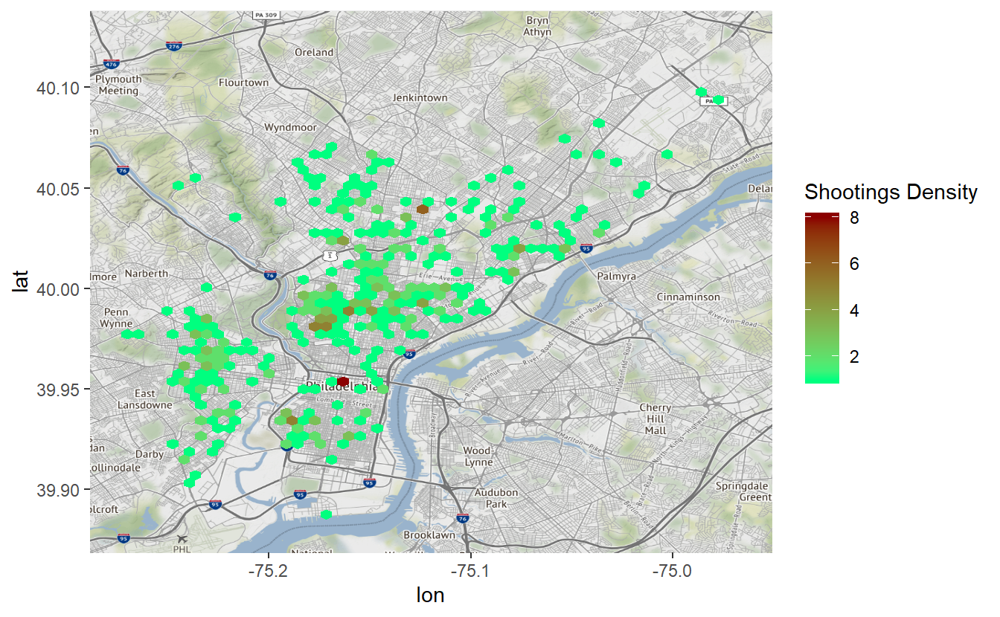
This map is useful because it allows us to easily see where each officer-involved shooting in Philly happened between 2007 and early 2019. There are some limitations though. This shows all shootings in a single map, meaning that any time trends are lost - we’ll address this at the end of the lesson. While you can see some clusters, it is difficult to see if there are any hot spots indicating areas with especially high or low amounts of shootings. You’ll notice that it has a message saying “Removed 2 rows containing missing values (geom_point).” That just means that ggplot() automatically deleted 2 rows that didn’t contain any longitude or latitude data. Most data will have a small number of rows missing values, that is nothing to be concerned about unless the number of missing values gets large enough to affect your data.
14.2 What really are maps?
Let’s pause for a moment to think about what a map really is. Below I made a simple scatterplot of our data with one dot per shooting (minus the two without coordinates). Compare this to the map above and you’ll see that they are the same except the map has a useful background while the plot has a blank background. That is all static maps are (in Chapter 16 we’ll learn about interactive maps), scatterplots of coordinates overlayed on a map background. Basically, they are scatterplots with context. And this context is useful, we can interpret the map to see that there are lots of shootings in West Philly but not around University City, for example. The exact same pattern is present in the scatterplot but without the ability to tell “where” a dot is.
plot(officer_shootings_geocoded$lon, officer_shootings_geocoded$lat, col = "darkred")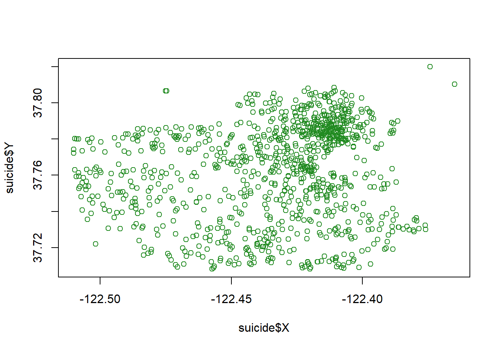
14.3 Making a hotspot map
Now we can start making hotspot maps which help to show areas with clusters of events. We’ll do this using hexagonal bins which are an efficient way of showing clusters of events on a map. Our syntax will be similar to the map above but now we want to use the function stat_binhex() rather than geom_point(). It starts the same as before with aex(x = lon, y = lat) (or whatever the longitude and latitude columns are called in your data), as well as “data = officer_shootings_geocoded” outside of the aes() parameter.
There are two new things we need to make the hotspot map. First we can add the parameter “bins = number_of_bins” where “number_of_bins” is a number we select. bins essentially says how large or small we want each cluster of events to be. A smaller value for “bins” says we want more events clustered together, making larger bins. A larger value for bins has each bin be smaller on the map and capture fewer events. This will become more clear with examples.
The second thing is to add the function coord_cartesian() which just tells ggplot() we are going to do some spatial analysis in the making of the bins. We don’t need to add any parameters in this.
Let’s start with 60 bins and then try some other number of bins to see how it changes the map.
philly_map +
stat_binhex(aes(x = lon, y = lat),
bins = 60,
data = officer_shootings_geocoded) +
coord_cartesian()
#> Coordinate system already present. Adding new coordinate system, which will replace the existing one.
#> Warning: Removed 2 rows containing non-finite values (stat_binhex).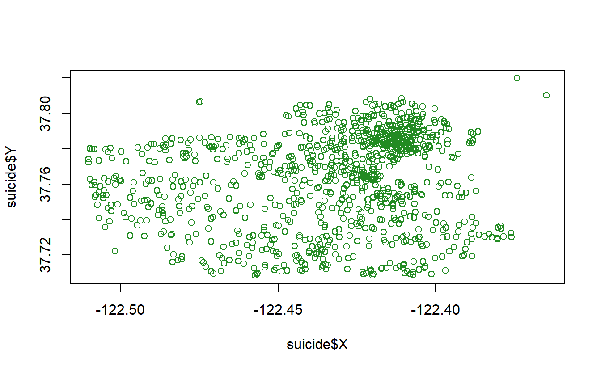
From this map we can see that most areas which had a shooting had 1-2 shootings in that area (a limitation to this map is it is unclear just how wide these “areas” are). North Philly and North-West Philly have more areas with more shootings, and more shootings overall. But look right in the middle of Center City by City Hall, an area has 8 shootings, the most of any bin. Were there really 8 shootings outside of City Hall? No. Remember those addresses that couldn’t be properly located? The coordinates given to those addresses were to City Hall, causing this weird pattern in our map.
What happens when we drop the number of bins to 30?
philly_map +
stat_binhex(aes(x = lon, y = lat),
bins = 30,
data = officer_shootings_geocoded) +
coord_cartesian()
#> Coordinate system already present. Adding new coordinate system, which will replace the existing one.
#> Warning: Removed 2 rows containing non-finite values (stat_binhex).Each bin is much larger and covers nearly all of Philadelphia. Be careful with maps like these! This map is so broad that it appears that shootings are ubiquitous across the city. We know from the map showing each shooting as a dot, and that there are <500 shootings, that this is not true. Making maps like this make it easy to mislead the reader, including yourself!
What about looking at 100 bins?
philly_map +
stat_binhex(aes(x = lon, y = lat),
bins = 100,
data = officer_shootings_geocoded) +
coord_cartesian()
#> Coordinate system already present. Adding new coordinate system, which will replace the existing one.
#> Warning: Removed 2 rows containing non-finite values (stat_binhex).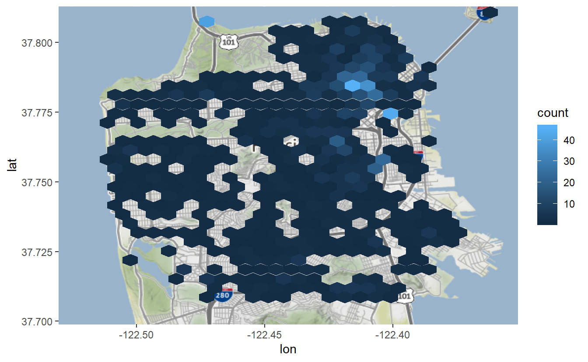
Now each bin is very small and a much smaller area in Philadelphia has had an officer-involved shooting. So what is the right number of bins to use? There is no correct universal answer - you must decide what the goal is with the data you are using. This opens up serious issues for manipulation - intentional or not - of the data as the map is so easily changeable without ever changing the data itself.
14.3.1 Colors
To change the bin colors we can use the parameter scale_fill_gradient(). This accepts a color for “low” which is when the events are rare and “high” for the bins with frequent events. We’ll use colors from ColorBrewer, selecting the reddish theme (“3-class OrRd”) from the Multi-hue section of the “sequential” data on the page.
philly_map +
stat_binhex(aes(x = lon, y = lat),
bins = 60,
data = officer_shootings_geocoded) +
coord_cartesian() +
scale_fill_gradient(low = "#fee8c8",
high = "#e34a33")
#> Coordinate system already present. Adding new coordinate system, which will replace the existing one.
#> Warning: Removed 2 rows containing non-finite values (stat_binhex).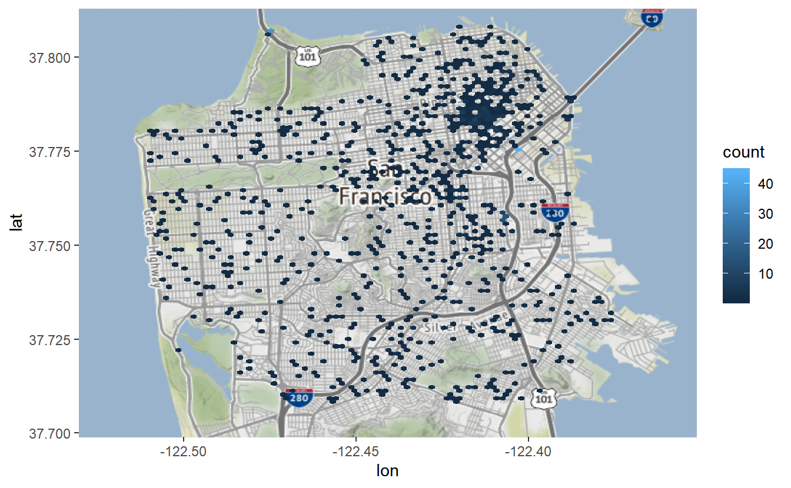
By default it labels the legend as “count”. Since we know these are counts of police shootings let’s relabel that as such.
philly_map +
stat_binhex(aes(x = lon, y = lat),
bins = 60,
data = officer_shootings_geocoded) +
coord_cartesian() +
scale_fill_gradient('Police Shootings',
low = "#fee8c8",
high = "#e34a33")
#> Coordinate system already present. Adding new coordinate system, which will replace the existing one.
#> Warning: Removed 2 rows containing non-finite values (stat_binhex).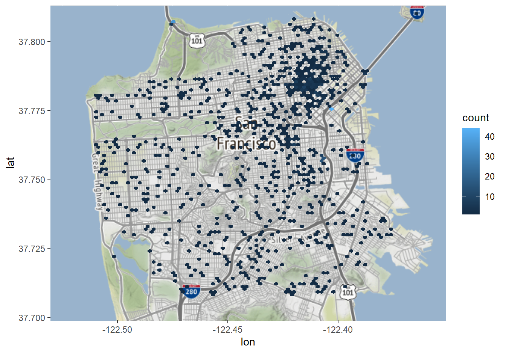
14.4 Looping through each year
Since our maps show every shooting on the same map, if there are different patterns depending on the year, we can’t pick up those patterns. As a check, let’s write a for loop that maps each year’s data separately. First we need to make a variable with the shooting’s year to be able to subset data for just that year. We can use the year() function from lubridate to do this.
library(lubridate)
#>
#> Attaching package: 'lubridate'
#> The following object is masked from 'package:base':
#>
#> date
officer_shootings_geocoded$year <- year(officer_shootings_geocoded$dates)As a basic check, let’s just see how many shootings there were each year.
table(officer_shootings_geocoded$year)
#>
#> 2007 2008 2009 2010 2011 2012 2013 2014 2015 2016 2017 2018 2019
#> 61 40 55 47 44 59 35 28 21 22 12 12 5It looks like the general pattern is that shootings are declining. Now we can map each year. We are looping through each year in the data, and reusing the map code before except instead of the full data, we subset data to be only rows matching the year in that iteration of the loop.
for (year in unique(officer_shootings_geocoded$year)) {
print(
philly_map +
stat_binhex(aes(x = lon, y = lat),
bins = 60,
alpha = 0.75,
data = officer_shootings_geocoded[officer_shootings_geocoded$year == year, ]) +
coord_cartesian() +
scale_fill_gradient('Police Shootings',
low = "#fee8c8",
high = "#e34a33") +
ggtitle(paste("Philadelphia Police Officer-Involved Shootings, ", year))
)
}
#> Coordinate system already present. Adding new coordinate system, which will replace the existing one.
#> Coordinate system already present. Adding new coordinate system, which will replace the existing one.
#> Coordinate system already present. Adding new coordinate system, which will replace the existing one.
#> Coordinate system already present. Adding new coordinate system, which will replace the existing one.
#> Coordinate system already present. Adding new coordinate system, which will replace the existing one.
#> Coordinate system already present. Adding new coordinate system, which will replace the existing one.
#> Coordinate system already present. Adding new coordinate system, which will replace the existing one.
#> Warning: Removed 1 rows containing non-finite values (stat_binhex).
#> Coordinate system already present. Adding new coordinate system, which will replace the existing one.
#> Coordinate system already present. Adding new coordinate system, which will replace the existing one.
#> Coordinate system already present. Adding new coordinate system, which will replace the existing one.
#> Coordinate system already present. Adding new coordinate system, which will replace the existing one.
#> Warning: Removed 1 rows containing non-finite values (stat_binhex).
#> Coordinate system already present. Adding new coordinate system, which will replace the existing one.
#> Coordinate system already present. Adding new coordinate system, which will replace the existing one.


 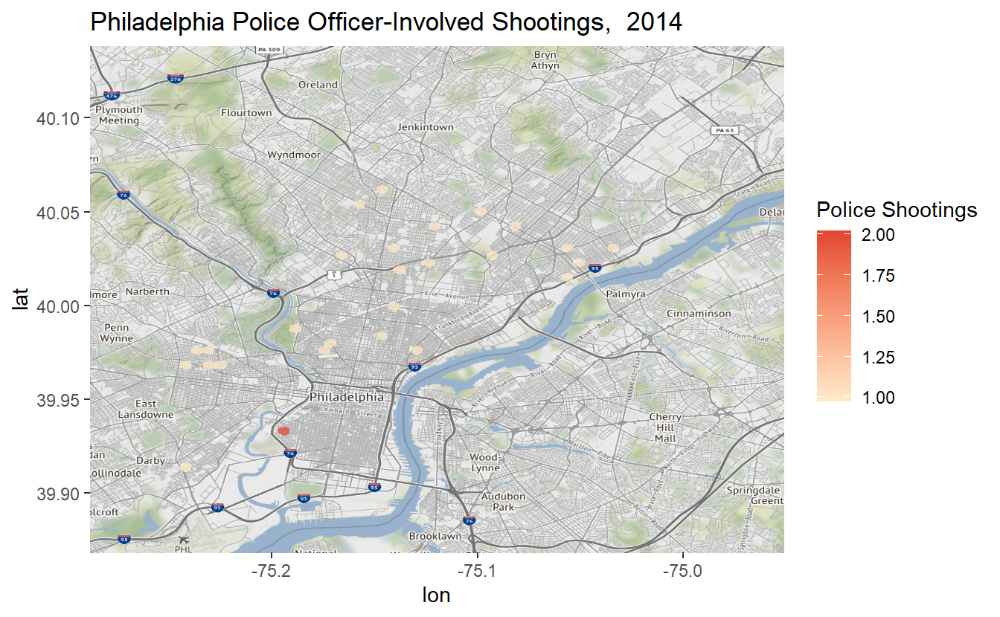
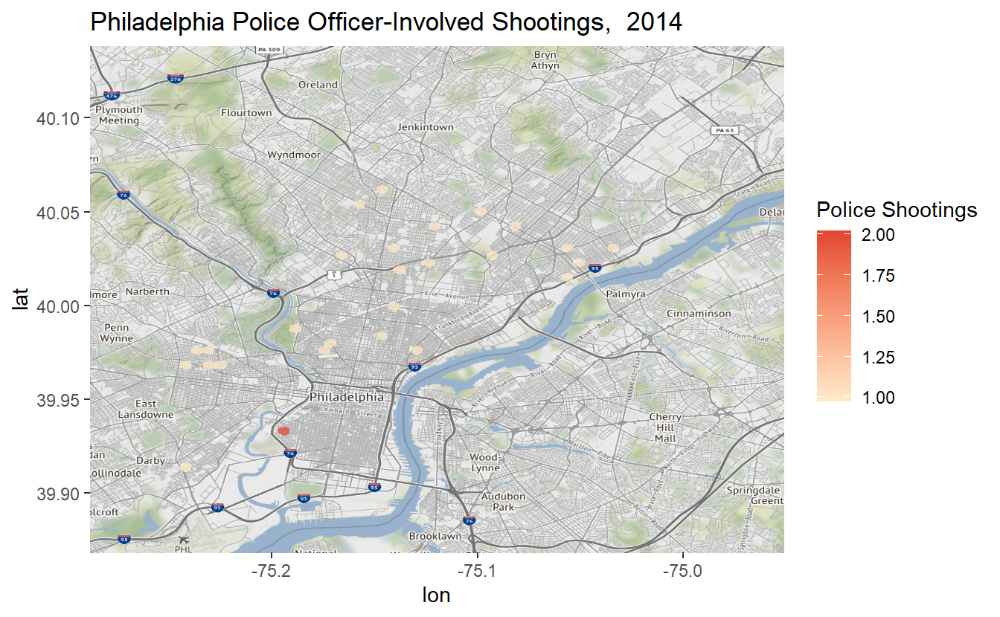